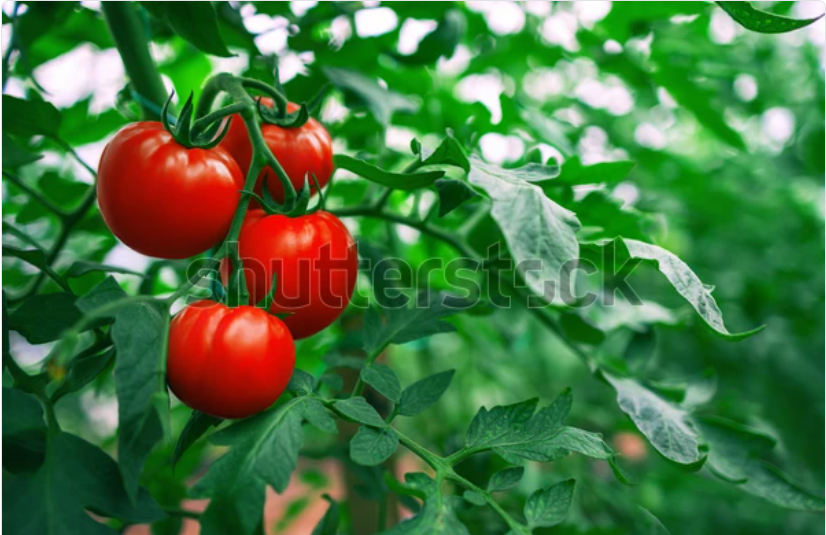

Vegetables
Tomato
Our tomato growing guide takes you from planting to harvesting! Find out when to plant this Kenya’s favorite garden crop, the best way to grow tomatoes, how long it takes a tomato to bear fruit, and what tomatoes need to thrive.
Price: $2.00 per kg
Spring Onions

Spring onions, also called Scallions or Green and Bunching Onions, are very easy to grow both for subsistence and commercial purposes. They are versatile and can be used in a variety of recipes as seasoning in soups and salads.
Price: $1.50 per bunch
Cabbage

Cabbage is a cool-season crop that requires an optimum growth temperature range of 15-20°C. It requires adequate, well-distributed rainfall, especially during the early stages of growth.
Price: $1.20 per head
Broccoli

Broccoli is a member of the cabbage family and is gaining popularity due to its nutritional value and demand in both domestic and export markets.
Price: $2.50 per bunch
Garlic

Garlic, popularly known as ‘Kitunguu Saumu’ in Kenya, belongs to the onion family and is highly valued for its attractive returns and high demand in the market.
Price: $3.00 per bulb
Onion

Red onions are in high demand in Kenya, with a significant percentage being imported from Tanzania. Kenyan farmers are working to meet the demand and reduce imports.
Price: $1.80 per kg
Kale

Kale, known locally as Sukumawiki, is a member of the Brassica family and is popular due to its high nutritional value and high demand in Kenya.
Price: $1.00 per bunch
Beetroot

Beetroot, scientifically known as Beta vulgaris, is a biennial root vegetable grown for its edible root, which is rich in nutrients.
Price: $2.20 per kg
Spinach

Spinach is a leafy green vegetable known for its nutritional benefits and versatility in cooking. It grows well in cool climates and is easy to cultivate.
Price: $2.00 per bunch
Carrot

Carrots are root vegetables known for their bright orange color and sweet flavor. They are rich in beta-carotene and are a popular choice for both fresh consumption and processing.
Price: $1.30 per kg
Quick Contacts
Warehouse No. 6, Athi 55 Ltd Complex
+254 722 563 698
+254 735 544 544
+254 723 443 677